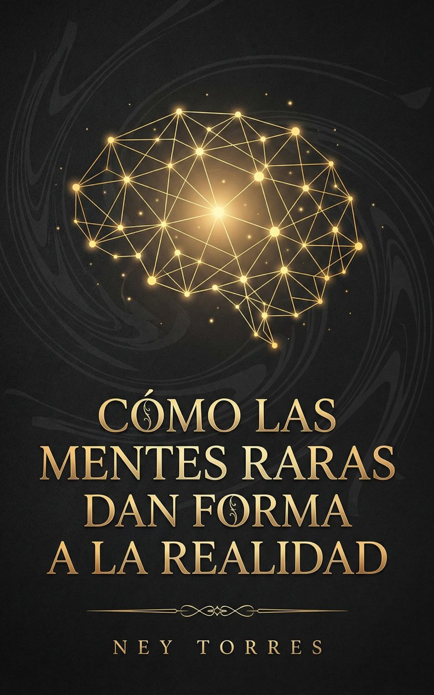

Conciencia, escasez y la arquitectura del genio
Las mentes que cambian el mundo no son las más inteligentes. Son las más raras.
Descargar el PDF ↓En 13.800 millones de años de historia del universo, la conciencia reflexiva apareció una sola vez que sepamos. Esa rareza no es un accidente: es la pista para entender por qué un puñado de mentes ha dado forma desproporcionada a la realidad que todos habitamos.
Este libro recorre la neurociencia, la física de redes, la teoría evolutiva y la historia de las ideas para responder una pregunta que pocos formulan: ¿por qué ciertos individuos, no los más brillantes sino los más integrados, terminan rediseñando el mundo?
No es autoayuda. Es un mapa para quienes ya saben que piensan distinto y quieren entender por qué eso importa.
Este es un manuscrito antes de su publicación. Tu lectura me sirve para pulirlo. No necesitas ser experto: me importa tu experiencia honesta como lector.
Envíame tus notas respondiendo al mensaje con el que recibiste este enlace. Si el PDF se actualiza, este mismo botón descargará siempre la versión más reciente.
Descargar el PDF ↓